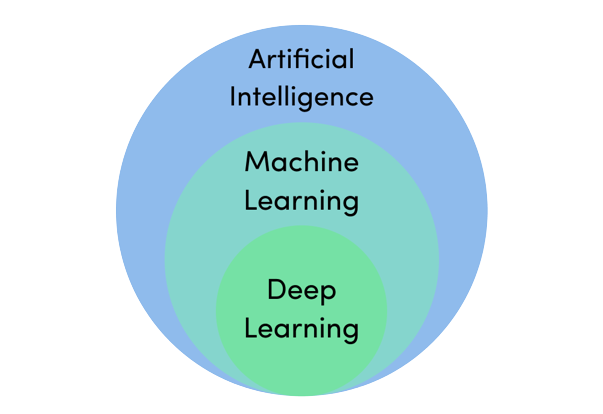
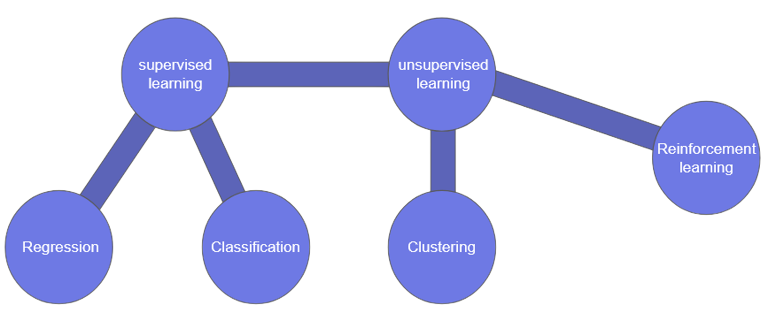
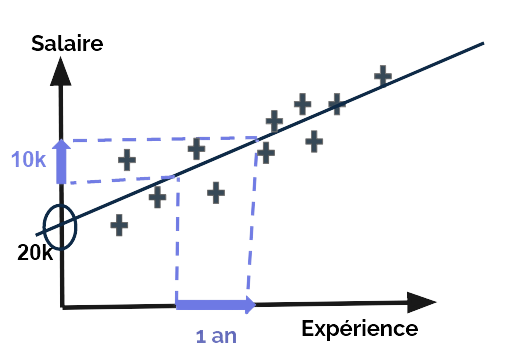
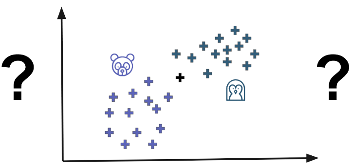
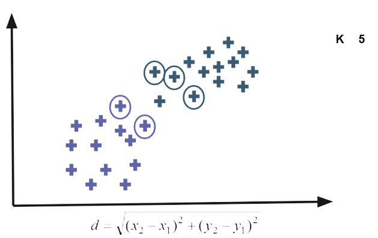

Machine Learning
Qu’est que le machine learning ?
Le machine learning (ML) est une forme d’intelligence artificielle (IA) qui est axée sur la création de systèmes qui apprennent, ou améliorent leurs performances, en fonction des données qu’ils traitent. L’intelligence artificielle est un terme large qui désigne des systèmes ou des machines simulant une forme d'intelligence humaine. Le machine learning et l'IA sont souvent abordés ensemble et ces termes sont parfois utilisés de manière interchangeable bien qu'ils ne renvoient pas exactement au même concept. Une distinction importante est que, même si l’intégralité du machine learning repose sur l’intelligence artificielle, cette dernière ne se limite pas au machine learning.
Aujourd’hui, nous utilisons le machine learning dans tous les domaines. Lorsque nous interagissons avec les banques, achetons en ligne ou utilisons les médias sociaux, des algorithmes de machine learning entrent en jeu pour optimiser, fluidifier et sécuriser notre expérience. Le machine learning et la technologie qui l’entoure se développent rapidement, et nous commençons seulement à entrevoir ses capacités.
Les phases du Machine Learning
Phase d’apprentissage
Cette phase consiste à entrainer notre modèle sur des données préparées et analysées afin qu’il puisse accomplir une tâche précise.
Phase de test
Cette phase, elle consiste à mettre en application notre modèle afin de visualiser ses résultats et évaluer ses performances.
COMPETITION ANALYSIS
Supervised learning
Le supervised learning consiste à entrainer un modèle en utilisant des données étiqueté au préalable. Par exemple, supposons que nous voulons créer un modèle qui différencie les pommes et les oranges, ont lui mettra à dispositions un certains
nombres d’images de pommes et d’oranges où il sera précisé à chaque fois ce que l’image représente. Il existe de nombreux algorithmes de supervised learning, les plus connues étant ceux de régression et de classification.
Algorithmes de régression
Les algorithmes de régressions sont utilisé pour les problèmes nécessitant de prédire une variable continue, tel que le salaire d’un employé.
Ces algorithmes sont nombreux et se divisent en plusieurs types différents, certains étant linéaire, d’autre d’autre non linéaire, certain simple et d’autres multiples.
Exemple d’algorithme de régression :
- Simple Linear Regression
- Multiple Linear Regression
- Polynomial Regression
- Support Vector Regression (SVR)
Algorithmes de classification
Les algorithmes de classifications sont utilisé pour les problèmes nécessitant de prédire une catégorie, tel que la race d’un chien ou la couleur d’un objet.
Exemple d’algorithme de classification :
- K-Nearest Neighbors (K-NN)
- Logistic Regression
- Support Vector Machine (SVM)
- Decision Tree Classification
- Random Forest Classification
- Naive Bayes Classification
- Perceptron
- One Vs All
- One Vs Rest
- One Vs One
Simple linear regression
A simple linear regression ou une Régression linéaire simple correspond à la formule suivante:
Y = a + bX
- Y: Dependent variable (DV)
- X: Independent variable (IV)
- a: Constant
- b: Coefficient
La régression linéaire simple est un algorithme de régression qui permet de prédire une variable continue en fonction d’une variable continue.
Exemple d’algorithme de régression linéaire simple :
Salary= a + b*Expérience
k-Nearest Neighbours (KNN)
l’algorithme K-NN (K-nearest neighbors) est une méthode d’apprentissage supervisé. Il peut être utilisé aussi bien pour la régression que pour la classification.
Exemple d’algorithme de KNN :
 Unsupervised Learning
Contrairement au supervised learning, l’USL consiste à entrainer le modèles en utilisant des données non étiquetées. Pour revenir à notre exemple précédant notre modèle aura des données d’entrainement qui n’indique pas si l’image représente une pomme ou une orange, par conséquent le modèle devra les différencier par lui-même en se basant sur les attributs en commun des images et de par la suite les classer en groupes homogènes.
L’un des algorithmes d’USL les plus connus sont les algorithmes de clustering.
Algorithmes de clustering
Les algorithmes de clustering souvent utilisés comme technique d'analyse de données pour découvrir des modèles intéressants dans les données, tels que des groupes de clients en fonction de leur comportement. Il existe de nombreux algorithmes de clustering parmi lesquels choisir et aucun meilleur algorithme de clustering unique pour tous les cas.
- K-Means Clustering
- Hierarchical Clustering
- Spectral Clustering
- Agglomerative Clustering
K-means clustering
Un exemple explique tout:
Ressources:
- Statquest
- Machine Learnia
- Freecodecamp
- Tech with tim
- Daniel Bourke
- Sklearn Documentation
- Geeksforgeeks
- OpenClassroom
- Hands-On Machine Learning with Scikit-Learn and TensorFlow